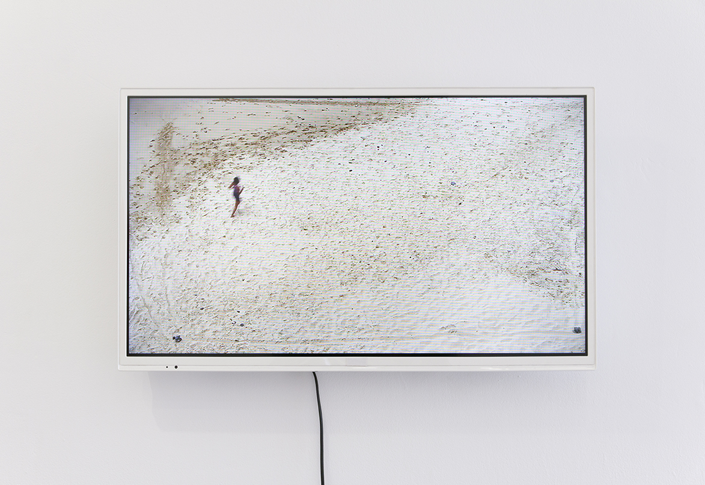

entrelaçar
2020
Vídeo HD, cor, som stereo, 21’06’’, loop
Sinopse:
Restringida sensivelmente ao enquadramento visual, a artista corre. Simultaneamente são registados valores mensuráveis do cérebro, através de um eletroencefalograma (EEG). Os valores do EEG são, sincronizadamente à performance, traduzidos para som, uma onda sinusóide que reage proporcionalmente aos potenciais elétricos do cérebro. A performance foi documentada audiovisualmente e é apresentada em loop.
HD video, color, stereo sound, 21'06'', loop
Synopsis:
Restricted spatially to the visual framework, the artist runs. At the same time, measurable brain values are recorded using an electroencephalogram (EEG). EEG values are, synchronously to performance, translated into sound, a sine wave that reacts proportionally to the brain's electrical potentials. The performance was documented audiovisually and is presented in a loop.



In the collective exhibition Sound Studies: The Final Report, at Zaratan – Arte Contemporânea